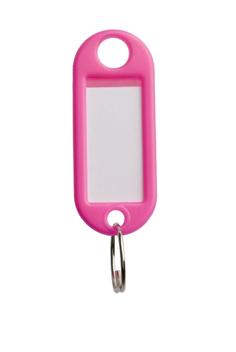

13:00
Cling-cling-cling is always more reassuring than no sound at all. One time I lost them, on the red bridge. I walked back and forth, but i could not see the bright pink tag attached to them. At least i have roomates, 3 of them. However, another one, Ava, the one with blue hair, lost hers almost at the exact same time as well. We contacted the landlord and the keys were found! Which meant that someone had to take them within the 10 minutes of my frantic walk.
